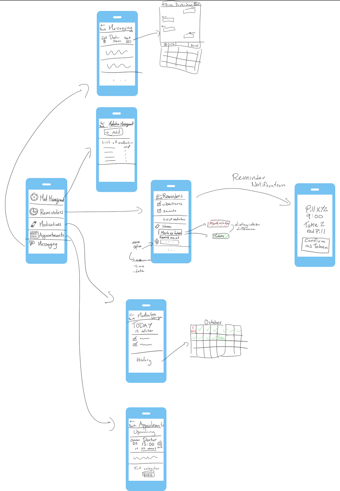
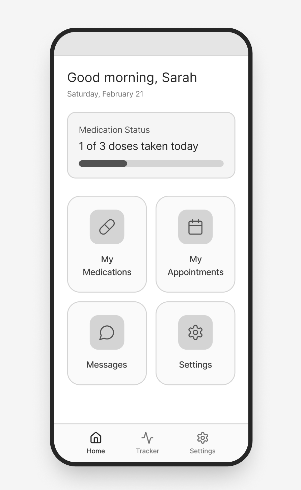
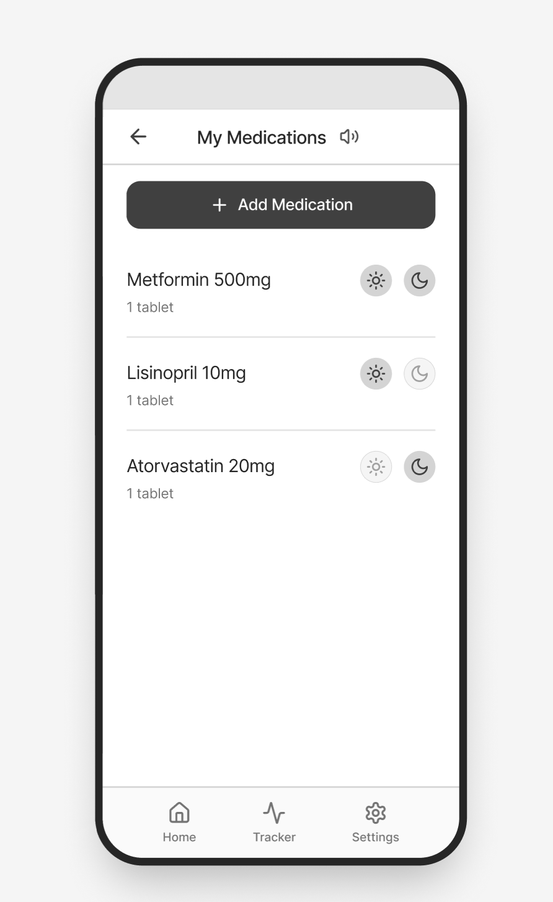
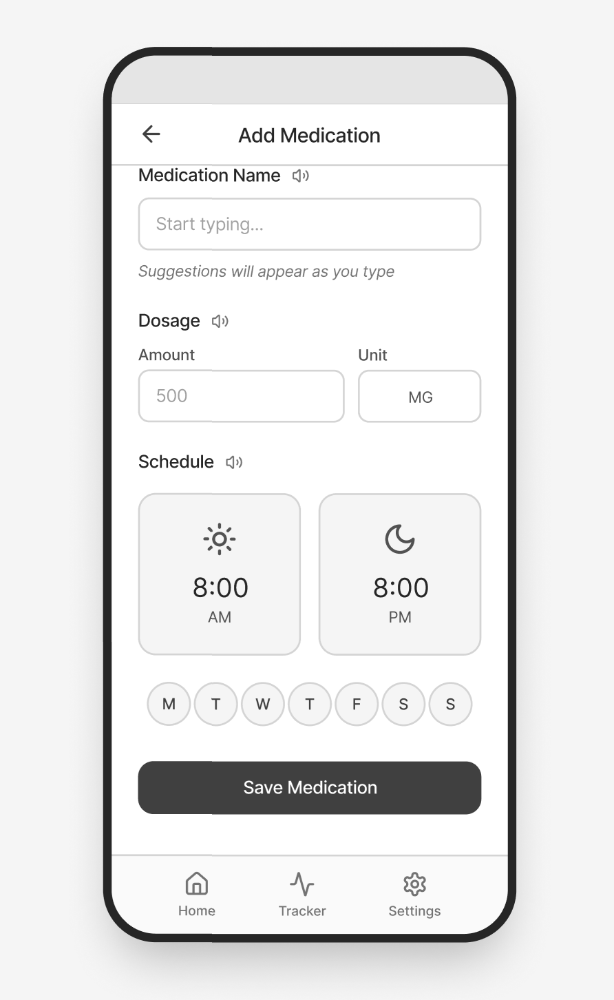
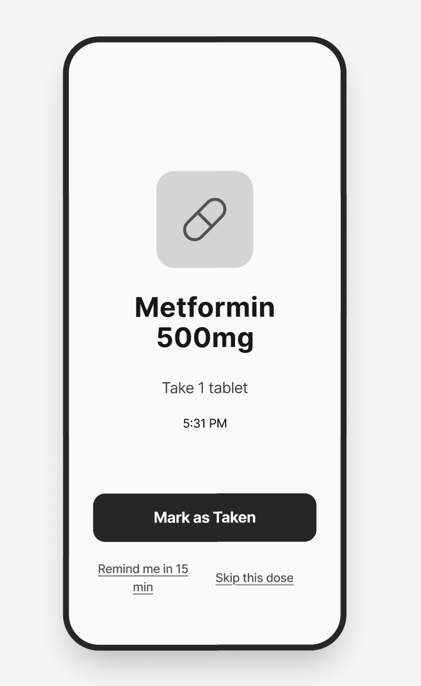
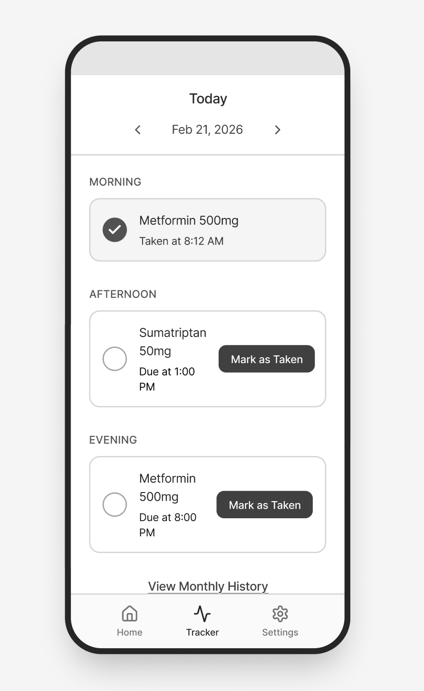
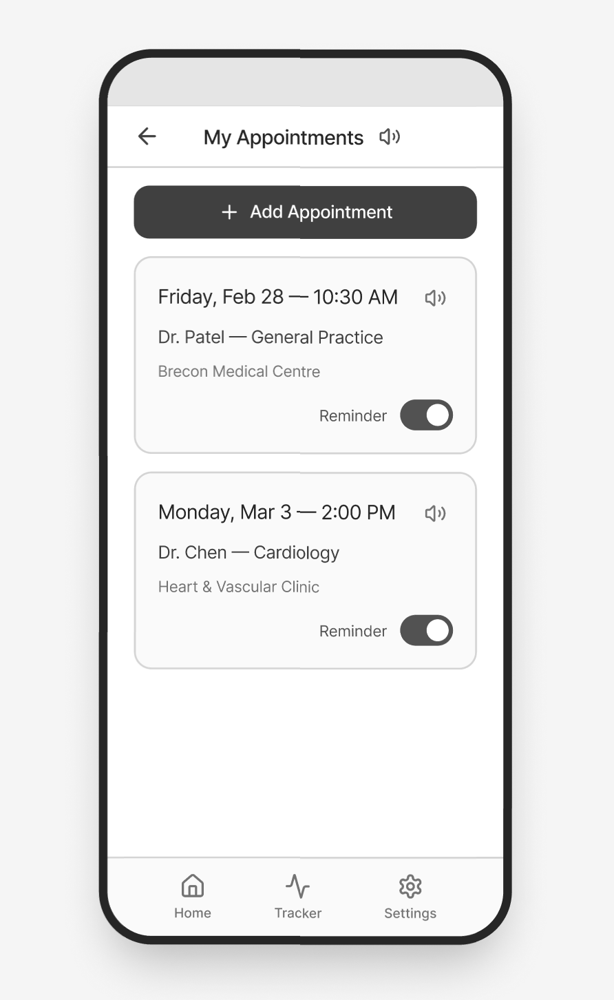
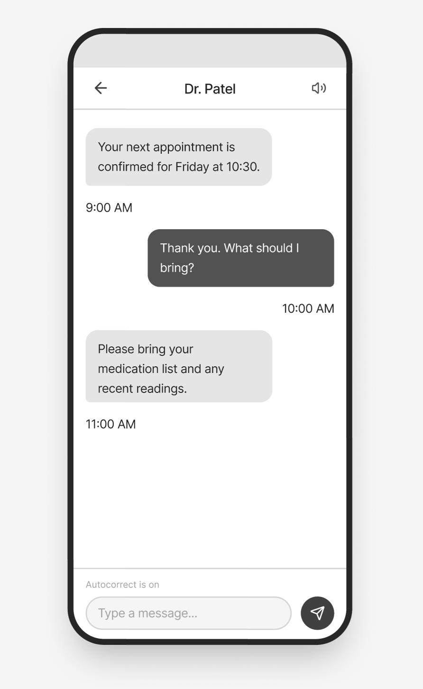

Managing a chronic health condition is a continuous, daily effort:
Someone with ADHD may struggle with the self-regulation medication adherence requires. An older adult with dyslexia may be unable to read a medication leaflet. Existing tools (generic reminder apps, text-heavy patient portals, paper-based systems) rarely account for this complexity.
HealthApp is a mobile health management application designed to close this gap. It focuses on five core capabilities:
| Feature | Description |
|---|---|
| Medication management | Add and manage medications, dosages, and schedules in one place |
| Medication reminders | Persistent notifications that remain visible until the dose is logged |
| Usage tracking | A clear log of every dose with timestamps |
| Appointment management | Store, view, and receive reminders for upcoming appointments |
| Healthcare communication | In-app messaging with medical professionals |
The app prioritises accessibility as a core design decision: plain language, audio alternatives, adjustable contrast and text size, descriptive buttons, icons alongside text, and consistent layouts throughout.
We used two complementary research methods, surveys and semi-structured interviews, designed to be accessible and multi-channel for a population that faces barriers with standard digital tools.
Semi-structured interviews (30-45 minutes) were offered via video call (with captions), phone, or in-person. Participants included people managing multiple chronic conditions and older adults with lower digital confidence. Topics covered daily routines, missed medications, GP communication challenges, current tools, and reactions to design concepts.
| Category | Breakdown |
|---|---|
| Responding as patient | 8 (67%) |
| Responding as caretaker | 4 (33%) |
| Age range | 22-74 |
| Conditions | ADHD, ASD, Type 2 Diabetes, Epilepsy, Migraines, Dyslexia, Hearing impairment, Hypertension |
| Need | Respondents |
|---|---|
| Simple, uncluttered layout | 9 |
| Larger text / adjustable text size | 8 |
| Icons alongside text labels | 6 |
| Audio read-aloud | 5 |
| High contrast mode | 4 |
| Autocorrect / spelling suggestions | 3 |
"I set three alarms for my tablets and I still miss them. By the third alarm I've convinced myself I already took them." - Participant A, 29, ADHD & migraines
"I'd love to message my GP instead of phoning. By the time I get through the phone menu I've forgotten what I wanted to say." - Participant C, 71, dyslexia & hearing impairment
"Every health app I've tried looks like it was designed for a 25-year-old with perfect vision. I just want big buttons and plain English." - Participant D, 66, Type 2 diabetes & hypertension
Common themes: alarm fatigue, fragmented records across multiple systems, accessibility as a prerequisite rather than an optional mode, and phone call avoidance.
The research confirmed three core design priorities:
Based on our research, we developed two personas representing distinct user groups.
Young adult managing multiple conditions independently
Diagnosed with ADHD at 16 and ASD at 22. Works part-time from home and manages three medications on different schedules. Digitally confident but finds most health apps visually overwhelming.
Older adult with multiple accessibility needs
Has struggled with reading his whole life and has moderate hearing loss. Manages Type 2 diabetes and hypertension with daily medication. Comfortable with WhatsApp but rarely uses other apps. Lives rurally, making GP visits require significant planning.
Each journey map follows a persona through a realistic task, surfacing friction points that persona profiles alone cannot reveal.
Priya woke late after a disrupted night and is not certain which medications she has taken. She also needs to contact her GP to request a medication review, something she has been putting off because she dislikes phone calls. She opens HealthApp expecting a clear summary and a way to message her GP without complex menus.
| Stage | Channel | User Action | Pain Points | Emotion |
|---|---|---|---|---|
| 1. Trigger Missed alarm | Smartphone | Realises she slept through her reminder. Opens HealthApp. | Generic alarms become background noise. Needs persistent reminders. | Anxious |
| 2. Home Screen | App: Home | Dashboard shows today's medications: taken, due, or missed. | Previous apps required multiple menus for this view. | Oriented |
| 3. Missed Dose | App: Med Tracker | Sees morning dose marked missed. Taps for late-dose guidance. | Without in-app guidance, she'd search online or skip unsafely. | Unsure |
| 4. Dose Logged | App: Med Tracker | Takes medication, taps "Mark as Taken". Full-screen confirmation. | Extra steps (rating pain, notes) would cause her to abandon the flow. | Relieved |
| 5. Schedule | App: Med Tracker | Checks remaining doses: 1pm and 8pm shown as a simple timeline. | Complex calendar views are hard to parse on a difficult day. | Informed |
| 6. GP Message | App: Messaging | Writes a short note to her GP requesting a medication review. | Avoided this for weeks because it required a phone call. | Empowered |
| 7. Done | App: Home | Returns to home. One dose taken, two upcoming. Closes app. | No remaining friction. | Settled |
Derek's daughter helped him install HealthApp. He is setting it up for the first time: entering his two medications and checking his upcoming GP appointment. He expects large text, clear icons, and audio support.
| Stage | Channel | User Action | Pain Points | Emotion |
|---|---|---|---|---|
| 1. First Open | App: Home | Home screen shows two large tiles: "My Medications" and "My Appointments". | Too many options on the first screen would overwhelm him. | Cautious |
| 2. Add Medication | App: Med Setup | Taps "Add Medication" and types the name using autocorrect suggestions. | Spelling medication names is difficult with dyslexia. | Focused |
| 3. Audio Support | App: Med Setup | Taps the audio icon. A voice reads the field label and explains what to enter. | Without audio, he'd enter wrong info or stop and ask his wife. | Reassured |
| 4. Set Reminder | App: Med Setup | Uses the large time-wheel picker to set 8am and 8pm doses. | Small text input for time entry would be error-prone. | Confident |
| 5. Confirmation | App: Med Setup | Summary shows both medications with icons (sun for morning, moon for evening). | Icons allow visual confirmation without relying on reading. | Satisfied |
| 6. Appointment | App: Appointments | Taps "My Appointments". GP visit on Friday is listed. Confirms reminder is on. | Has missed appointments because he couldn't read the letter. | Organised |
| 7. GP Message | App: Messaging | Sends a message asking what to bring to the visit. | Phoning is difficult with hearing impairment. | Independent |
The sketch below maps out the main screens of HealthApp and the navigation paths between them.

| Screen | Key elements |
|---|---|
| Home / Menu | Central navigation hub with five main options: Med Management, Reminders, Medications, Appointments, and Messaging. Each option has an icon alongside the label for accessibility. |
| Medication Management | "+ Add" button at the top to add new medications. Below it, a scrollable list of current medications with dosage information. |
| Reminders | Toggle options for vibrations and sounds. List of medications with "Mark as Taken" and "Remind me at" actions. Voice input option for accessibility. Distinguishes between taken and pending doses with colour coding. |
| Reminder Notification | Push notification showing pill name, time (9:00), dosage ("Take 2 red Pill"), and a large "Confirm as Taken" button. |
| Medication Usage | Shows today's date with a checklist of doses taken. Links to a monthly calendar view (History) with check marks for completed days and colour highlights for missed doses. |
| Appointments | Lists upcoming appointments with date, time, doctor name, location, and an audio read-aloud icon. Links to a full calendar view at the bottom. |
| Messaging | Options to call or text a doctor. Message thread view with a text input field, draft/send buttons, and a linked doctor dashboard showing message history. |
The wireframes below represent the core screens of HealthApp. Every screen follows the principles identified in our research: large tap targets, icons alongside text labels, audio read-aloud buttons where text is present, and minimal navigation depth. More importantly they incorporate changes which address the discrepencies between the initial sketches and the personas/journeys.
The home screen acts as a central hub. A personalised greeting and today's date orient the user immediately. Below, a medication status card shows how many doses have been taken out of the day's total, with a progress bar for quick visual feedback. Four large tiles (My Medications, My Appointments, Messages, Settings) provide one-tap access to every major feature. A persistent bottom navigation bar offers shortcuts to Home, Tracker, and Settings from any screen.

This screen lists all active medications with their dosage and form (e.g. "1 tablet"). Sun and moon icons beside each entry indicate whether the dose is scheduled for morning, evening, or both, allowing visual confirmation without reading. A prominent "+ Add Medication" button sits at the top. An audio icon in the header enables read-aloud of the full list.

The add medication form is structured into three clearly labelled sections: Medication Name (with autocomplete suggestions to assist users with dyslexia), Dosage (split into Amount and Unit fields), and Schedule (using large sun/moon cards for morning and evening times). Day-of-week selectors allow flexible scheduling. Each section has its own audio icon so users can hear field labels read aloud. A single "Save Medication" button completes the flow.

When a dose is due, a full-screen notification appears showing the medication name, dosage instruction, and current time. The layout is deliberately simple: a large pill icon, bold text, and a single prominent "Mark as Taken" button. Two secondary options ("Remind me in 15 min" and "Skip this dose") sit below. This screen directly addresses the research finding that standard alarms are too easy to dismiss.

The tracker organises the day's doses into Morning, Afternoon, and Evening sections. Each medication card shows the name, dosage, and status. Completed doses display a filled checkmark and timestamp. Pending doses show a "Mark as Taken" button. Date navigation arrows at the top let users review past days, and a "View Monthly History" link at the bottom connects to a calendar view for longer-term adherence tracking.

Upcoming appointments are displayed as cards showing the date, time, doctor name, specialty, and location. Each card includes an audio icon for read-aloud and a reminder toggle. The "+ Add Appointment" button at the top mirrors the medication screen layout for consistency. This screen directly supports Derek's journey, where missed appointments stemmed from lost or unreadable letters.

The messaging screen uses a familiar chat layout. Messages from the healthcare professional appear on the left in light bubbles; the user's messages appear on the right in dark bubbles. Timestamps are shown below each message. An audio icon in the header allows the full conversation to be read aloud. The text input field notes that autocorrect is enabled, supporting users with dyslexia. This feature resolves the phone-call barrier identified for both personas.

| Decision | Rationale |
|---|---|
| Greyscale palette | Keeps wireframes focused on layout and hierarchy; Ensures design does not rely on colour coding for accessibility |
| Icons paired with every text label | Supports users with dyslexia and low literacy by providing a non-text route through each screen |
| Audio read-aloud on all content screens | Directly addresses the needs of Derek and similar users who struggle with reading |
| Full-screen reminder notification | Prevents the "dismissed and forgotten" problem reported by 75% of survey respondents |
| One-tap dose logging | Reduces friction identified in both user journeys; extra steps caused users to abandon the flow |
| Morning/evening sun and moon icons | Allows schedule recognition without reading, as identified in Derek's persona |
| Autocomplete on medication names | Assists users with dyslexia who find spelling medication names difficult |
| Consistent bottom navigation | Reduces cognitive load by keeping navigation predictable across all screens |
The two diagrams below map the primary paths a user takes through HealthApp. Solid arrows represent the main flow. Dotted arrows represent alternative or optional paths.
This flow covers the most frequent interaction with the app.
flowchart TD
A([Open App]) --> B[Home Screen medication status overview]
B --> C[Tracker today's dose list]
B --> D{Dose due?}
D -- yes --> E[Reminder full-screen notification]
D -- no --> F([All Done return to Home])
E --> G([Mark as Taken timestamp recorded])
E -.-> H([Snooze remind in 15 min])
E -.-> I([Skip Dose logged as skipped])
H -.-> D
G --> J[Tracker Updated]
I --> J
flowchart TD
A([Home Screen]) --> B[My Appointments upcoming visits list]
A --> C[Messages list of conversations]
B --> D[Appointment Card date, doctor, location]
D --> E([Reminder Toggle on / off])
D -.-> C
B --> F[+ Add Appointment new entry form]
F --> G([Saved])
C --> H[Select Doctor e.g. Dr. Patel]
H --> I[Chat Thread message history + audio]
I --> J[Compose Message autocorrect enabled]
J --> K([Message Sent])
A clickable prototype was built in Figma connecting all seven screens above. The prototype supports tap-based navigation between screens.
The prototype closely resembles the wireframes by design. Keeping the prototype visually restrained, with a simple palette and no reliance on colour coding, ensures it remains accessible to users with low vision, colour blindness, or sensory sensitivities.
Coming next.
Coming next.